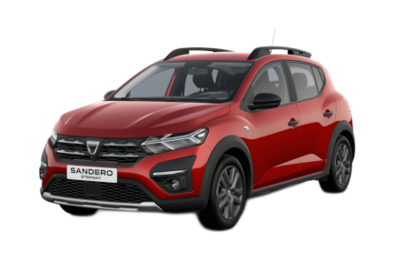
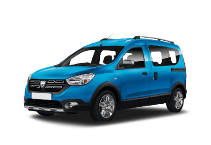

DACIA | |
 |
Dacia es una marca de automóviles de Rumania, fundada en el año 1966 y perteneciente al grupo Renault desde 1999. Inicialmente, los modelos de Dacia eran modelos Renault bajo licencia, el Renault 8 y en particular el Renault 12, que se fabricó entre los años 1969 y 2006 como Dacia 1300 en diferentes evoluciones. |
Dacia Sandero |
|
El Dacia Sandero es un coche urbano y económico, del segmento B, fabricado por Dacia desde 2007. Actualmente, el Dacia Sandero ya va por su tercera generación, presentada en 2020. El Dacia Sandero se caracteriza por ofrecer una practicidad excepcional por un precio inigualable. |
 |
CARACTERISTICAS |
|
Potencia |
245 |
peso |
1650 |
precio |
51800,00 |
consumo |
6.5 |
cilindrada |
2.0 |
Dacia Duster |
|
El Dacia Duster es un SUV compacto, del segmento C, fabricado por Dacia desde 2010. Actualmente, se comercializa la segunda generación, presentada en 2018. El Dacia Duster se caracteriza por concentrar en un sólo vehículo numerosas cualidades: un buen confort de marcha, buenas capacidades todoterreno y un precio muy competitivo. |
|
CARACTERISTICAS |
|
Potencia |
340 |
peso |
1600 |
precio |
82000,00 |
consumo |
6.7 |
cilindrada |
3.0 |
Dacia Logan |
|
El Dacia Logan es un utilitario muy económico, con carrocería de tres cuerpos, cuatro puertas, estilo sedán, y dimensiones muy compactas. |
|
CARACTERISTICAS |
|
Potencia |
395 |
peso |
1840 |
precio |
103000,00 |
consumo |
8.2 |
cilindrada |
4.4 |
Dacia Dokker |
|
el Dacia Dokker es un vehículo comercial, una furgoneta, Dacia ha orientado este modelo a un uso más familiar, para particulares. De esta forma, el Dacia Dokker cuenta con su versión de pasajeros, de tipo turismo, con toda la tecnología que ofrecen el resto de modelos Dacia, que es justa, pero la imprescindible. |
 | CARACTERISTICAS |
Potencia |
550 |
peso |
1820 |
precio |
120000 |
consumo |
10.6 |
cilindrada |
4.4 |